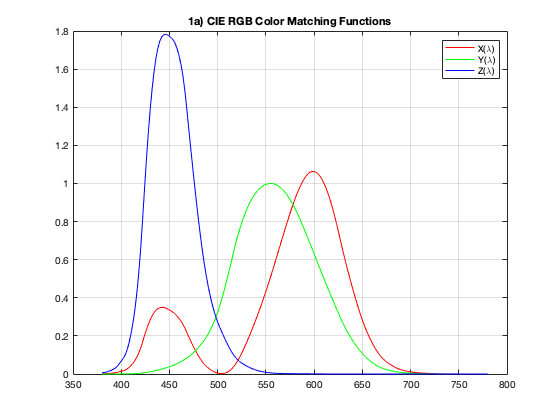
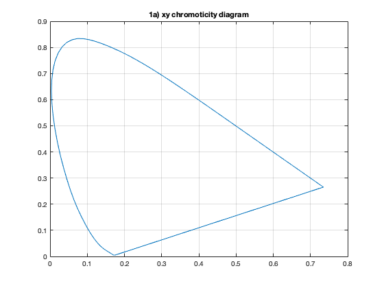
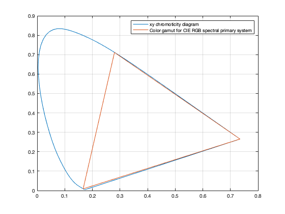
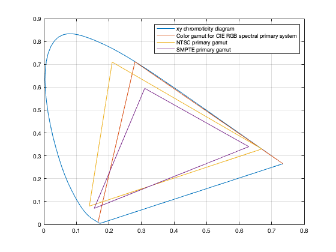
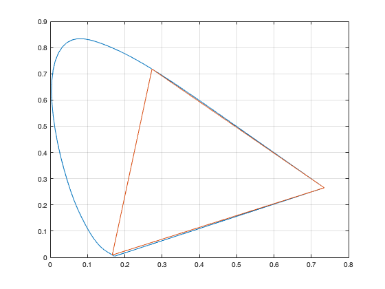
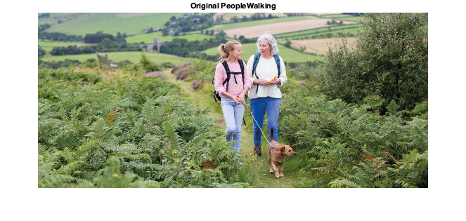
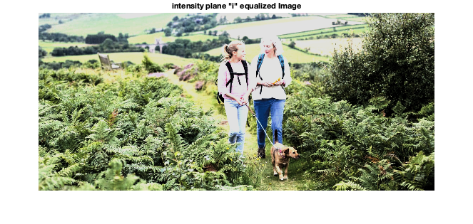
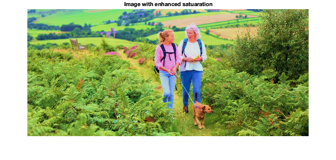
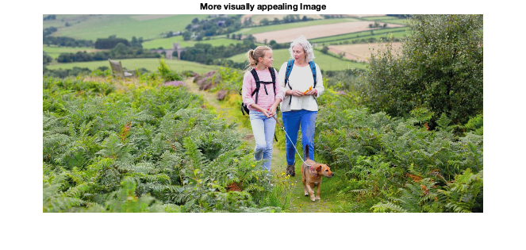

ECE 253 Homework 3
Shivani Bhakta A13832428
Contents
Problem 1 Chromaticity Diagrams
Part(a)
clear; close all; clc; load cie -ascii wavelength = cie(:,1); X = cie(:,2); Y = cie(:,3); Z = cie(:,4); % color matching functions figure(); plot(wavelength,X, 'r','DisplayName','X(\lambda)'), hold on; plot(wavelength, Y, 'g', 'DisplayName','Y(\lambda)'), hold on; plot(wavelength, Z, 'b', 'DisplayName','Z(\lambda)'); legend('X(\lambda)','Y(\lambda)', 'Z(\lambda)'); grid on; title('1a) CIE RGB Color Matching Functions'); figure(2) % xy chromaticity diagram x = X ./ (X+Y+Z);%element-wise division % x = [x;x(1)]; y = Y ./ (X+Y+Z); plot([x;x(1)],[y;y(1)]) grid on; title('1a) xy chromoticity diagram') x = [x;x(1)]; % line of purple y = [y;y(1)]; 
For the first figure, each of the color matching functions were ploted along the wavelength without any manipulation. For second, following the formula to get the Chromaticity coordinates of mixtures, the element-wise division by the sum of all the Tristimulus values was performed on X and Y tristimulus values and got x and y Note that the "line of purples" was optained using the endpoints of both x and y connecting them for the plot.
Part(b)
M = [0.49000 0.32000 0.2;
0.17697 0.81240 0.01063;
0 0.01 0.99000];
% Tristimulus Values
Xc = M * [1 0 0]'; %3x1
Yc = M * [0 1 0]';
Zc = M * [0 0 1]';
xX = Xc(1) / sum(Xc);
yX = Xc(2) / sum(Xc);
xY = Yc(1) / sum(Yc);
yY = Yc(2) / sum(Yc);
xZ = Zc(1) / sum(Zc);
yZ = Zc(2) / sum(Zc);
plot(x,y,[xX xY xZ xX], [yX yY yZ yX])
grid on;
legend('xy chromoticity diagram', 'Color gamut for CIE RGB spectral primary system');
c1 = [xX xY xZ xZ];
c2 = [yX yY yZ yZ];
 We are given the conversion from the CIE RGB space to CIE XYZ space. So considering the primaries of RGB as e1, e2, and e3 (i,e. [1 0 0], [0 1 0] , .. respectively), we will perform the linear transformation given to transform the coordinates in one system to the other system and get the XYZ colors. These XYZ Tristimulus Values then gets converted into xy chromaticity coordinates and plot onto the xy chromoticity diagram from part a as a triangle representing the color gamut of the CIE RGB spectral primary system.
Part(c)
M = [ 1.910 -0.533 -0.288;
-0.985 2.000 -0.028;
0.058 -0.118 0.896];
% Tristimulus Values
RN = inv(M) * [1 0 0]'; %3x1
GN = inv(M) * [0 1 0]';
BN = inv(M) * [0 0 1]';
xR = RN(1) / sum(RN);
yR = RN(2) / sum(RN);
xG = GN(1) / sum(GN);
yG = GN(2) / sum(GN);
xB = BN(1) / sum(BN);
yB = BN(2) / sum(BN);
plot(x,y,c1, c2, [xR xG xB xR], [yR yG yB yR])
grid on;
legend('xy chromoticity diagram', 'Color gamut for CIE RGB spectral primary system','NTSC primary gamut'); %, 'SMPTE primary gamut'
c3 = [xR xG xB xR];
c4 = [yR yG yB yR];
M = [ 3.508 -1.741 -0.544;
-1.069 1.977 0.035;
0.056 -0.197 1.051];
% Tristimulus Values
RS = inv(M) * [1 0 0]'; %3x1
GS = inv(M) * [0 1 0]';
BS = inv(M) * [0 0 1]';
xR = RS(1) / sum(RS);
yR = RS(2) / sum(RS);
xG = GS(1) / sum(GS);
yG = GS(2) / sum(GS);
xB = BS(1) / sum(BS);
yB = BS(2) / sum(BS);
plot(x,y,c1, c2, c3, c4, [xR xG xB xR], [yR yG yB yR])
grid on;
legend('xy chromoticity diagram', 'Color gamut for CIE RGB spectral primary system','NTSC primary gamut', 'SMPTE primary gamut');
 we are given the conversions from CIE XYZ space to RGB (in NTSC receiver primary system). However, we know the primary of RGB an we need to convert that to XYZ in order to be able to plot the triangle in the xy chromaticity diagram. Therefore, we will need to take the inverse of the transformation matrix and same primary as previous part, we can get the XYZ tristimulus values, which can be used to get the xy chromaticity coordinates to plot on the diagram. Therefore the process is the same as previous part after taking the inverse of the matrix. We do the same thing to get the SMPTE phosphors.
The NTSC seems to provide the larger gamut. However, note that this space is not perceptually uniform, so we cannot forsure predict which is larger but from just the looks of it NTSC seems bigger.
Part(d)
indx = find(cie(:,1) == 700); Xc = cie(indx,2:4); %1x3 \ indx = find(cie(:,1) == 546); Yc = cie(indx,2:4); indx = find(cie(:,1) == 436); Zc = cie(indx,2:4); % Tristimulus Values xX = Xc(1) / sum(Xc); yX = Xc(2) / sum(Xc); xY = Yc(1) / sum(Yc); yY = Yc(2) / sum(Yc); xZ = Zc(1) / sum(Zc); yZ = Zc(2) / sum(Zc); plot(x,y,[xX xY xZ xX], [yX yY yZ yX]) grid on;
To get CIE RGB spectral primary system where the monochromatic spectral primaries (Red = 700nm, Green = 546.1nm ~= 546nm, Blue = 435.8nm ~= 436nm) were used for the original color matching experiment. we are already given these in CIE, thus we only get the RGB values that meet the above wavelength requirement. This gives us 3 vectors with each length of 3 points. Once we have these, we get their Tristimulus Values through the standard formulas and plot the triangle for connect the points on the xy chromaticity diagram. As expected, the triangle is exactly same as part b) where we did the linear transformation to go betweeen the CIE XYZ and CIE RGB color systems. Since we were already given the points here, it checks out work.
Problem 2 Chromaticity Diagrams
clc; close all; clear; img = imread("PeopleWalking.jpeg"); r = img(:,:,1); g = img(:,:,2); b = img(:,:,3); figure, imshow(img); title('Original PeopleWalking');
Part(a)
Check inputs in the range of 0 to 255
assert(all(all(r >= 0 | r <= 225)) == 1);
assert(all(all(g >= 0 | g <= 225)) == 1);
assert(all(all(b >= 0 | b <= 225)) == 1);
[h,s,i] = rgb2hsi(r,g,b);
ihe = histeq(i);
[rHE, gHE, bHE] = hsi2rgb(h,s,ihe);
rHE(rHE<0) = 0; rHE(rHE>225) = 225;
gHE(gHE<0) = 0; gHE(gHE>225) = 225;
bHE(bHE<0) = 0; bHE(bHE>225) = 225;
rHE = uint8(rHE);
gHE = uint8(gHE);
bHE = uint8(bHE);
imHE = reshape([rHE gHE bHE], 500, 1110, 3);
figure;
imshow(imHE)
title('intensity plane "i" equalized Image')
 As it can be seen in the qualized image, there is a hue change on the dark parts of the image such as the bagpack of the person, it becomes darker. The light colors like the hairs, shirts and even the field in the background that might be very light brown in the original image, turns into a more whiter patch. Similarly, the lighter green grass areas on the left starts to show more of a brighter white color and the grass on the right becomes more darker, which was dark green originally. More generally, the intensity in the image is spreading. Lighter things becomes more light (closer to white) and darker things becomes (closer to black). This is probably because the histogram equalization spreads out the common intensity values. We can also say this as increasing the contrast in the image.
Part(b)
% enhance saturation newS = sqrt(s); % ihe = histeq(i); [rHE, gHE, bHE] = hsi2rgb(h,newS,i); % [rHE, gHE, bHE] = hsi2rgb(h,newS,ihe); rHE(rHE<0) = 0; rHE(rHE>225) = 225; gHE(gHE<0) = 0; gHE(gHE>225) = 225; bHE(bHE<0) = 0; bHE(bHE>225) = 225; rHE = uint8(rHE); gHE = uint8(gHE); bHE = uint8(bHE); imHE = reshape([rHE gHE bHE], 500, 1110, 3); figure; imshow(imHE) title('Image with enhanced satuaration')
By taking the square of the satuaration values, we are increasing the overall saturation of the image. This basically means the image has become more colorful or richer in it's colors. The green grass areas have become more green in color. This did some good to the image, however, the similar effect on the other parts wear not a change for good. For example, the person's white hair turned red, their skin also changed to show more red. Thus, any parts that were close to white in the original image has started to look a lot more of red, we can also see this in the people's shirt, not just in their skin and hair. The background field/farm region also have become more brown where it was originally lighter brown areas. The reason for the white region to appear red after the saturation could be that when satuation is person, we enhance the color that are of dominating in originial gets enhanced after.
Part(c)
clc; close all; clear; img = imread("PeopleWalking.jpeg"); r = img(:,:,1); g = img(:,:,2); b = img(:,:,3); figure; imshow(img); title('Original PeopleWalking'); [h,s,i] = rgb2hsi(r,g,b); % enhance saturation for only some parts newS = s; for ii = 1:size(s,1) for jj = 1:size(s,2) if s(ii,jj) <= 0.289 newS(ii,jj) = s(ii,jj); else % making sure the number do not excide 1 % if sqrt(s(ii,jj)) > 1 % s(ii,jj) * 2 > 1 % newS(ii,jj) = 1; % else newS(ii,jj) = sqrt(s(ii,jj)); %s(ii,jj) * 2.2; % end end end end [rHE, gHE, bHE] = hsi2rgb(h,newS,i); % [rHE, gHE, bHE] = hsi2rgb(h,newS,ihe); rHE(rHE<0) = 0; rHE(rHE>225) = 225; gHE(gHE<0) = 0; gHE(gHE>225) = 225; bHE(bHE<0) = 0; bHE(bHE>225) = 225; rHE = uint8(rHE); gHE = uint8(gHE); bHE = uint8(bHE); imHE = reshape([rHE gHE bHE], 500, 1110, 3); figure; imshow(imHE) title('More visually appealing Image')
For previous part, we noticed that we didn't want the red hue that we were getting for the lighter parts like white hair, shirts, skin etc. So to help with that we will try to test out by not changing the satuation values until certain number. So Basically keep saturation as it for some range and enhance it for the rest till 1. Here I specifically didn't change all the sections with saturation less than 0.289 and kept it as is and for rest, we take the square root like previous section. This removed the redness accross the white parts, while enhacing rest of the image by making it look more colorful.